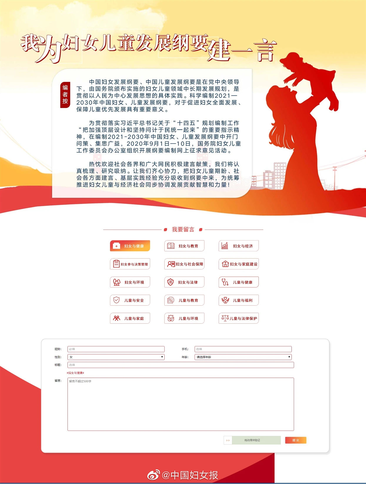

//@鸟正:我建议把“中国妇女、儿童”提议分开。妇女要的是平等而不是保护，儿童要的是保护而不是平等。女性拥有平等的房基地、财产继承、出生、教育、工作、参政议政权等等；女人不需要男人保护；女人只是要拿回应有的；全社会都应当“正视”女性应有的权益。@中国妇女报:【意见征集！我为中国妇女、儿童发展纲要建一言】2020年9月1日-10日，国务院妇女儿童工作委员会办公室对编制2021-2030年中国妇女、儿童发展纲要组织开展网上征求意见活动。可选择的15个领域包括妇女与健康、妇女与教育、妇女与经济、妇女参与决策管理、妇女与社会保障、妇女与家庭建设、妇女与环境、妇女与法律、儿童与健康、儿童与安全、儿童与教育、儿童与福利、儿童与家庭、儿童与环境和儿童与法律保护。欢迎为妇女儿童事业发展建言献策！快来参与吧！戳链接网页链接